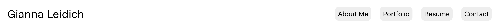

Creating This Website
Introduction
This website is the final project for the software course of the professional writing and technical communications certificate program. It was created using HTML/CSS and some JavaScript. You can read about my design process, including the research, planning, and coding that went into implementing this website.
Research
The first step in my design process was to research and gather information from other designer’s portfolio websites. During this stage, I focused on visual design and noted what features that I liked best and most wanted to replicate on my own website.
Planning
During the planning stage, I produced this planning document, in which I define my audience, set my goals, and detail my visual design choices, based on my prior research.
Also included in this doc plan were wireframes and a sitemap to help guide my implementation and logical flow of the website.
Implementation
Creating the Navbar
The first component that I implemented was the navbar, which is consistent across the entire website. I focused on layout, readability, and responsiveness on a page resize.
If the browser window gets too small, the links on the navbar stack due to the limited width real estate. This is also consistent throughout the website.

Designing the Home page
After finalizing the navbar, I focused on slowly building the website page-by-page. Naturally, I started with the Home page.

This page was the most difficult to implement because its structure is the most unique. I relied on using CSS grid the most because it allowed me to have specific control over where and how my elements appeared.
Finishing the Remaining pages
The remaining pages were much more straightforward to implement. Each one has a similar structure, especially the About Me and Contact pages.
The only pages to give me real struggle were the Resume and Portfolio pages, again due to their complicated layouts. Again I used grid, and sometimes grids inside of grids.
I also decided to use JavaScript to add an image carousel on the Portfolio page to showcase my graphics and add a bit of interactivity to the page.
Accessibility
Putting digital accessibility first was a forefront focus of this portfolio. I designed this website to be “universally accessible,” that is, as accessible to the widest range of users, regardless of (dis)ability.
Accessibility features include alt text for all images, sufficient color contrast between text and background, and ARIA labels where appropriate.
Conclusion
This website is the result of several iterations of researching, planning, and coding. To create a digital achieve for my projects and demonstrate my web design skills were the main goals in creating this portfolio website, and I believe that I have achieved those goals.
Fun Facts
- I have tried to make a personal website several times before. This is the only one that came to fruition.
- I only used one color that was not black, gray, or white: slategray.
- In the same semester I implemented this website, I had to implement websites for two other courses. This one was my favorite to work on.